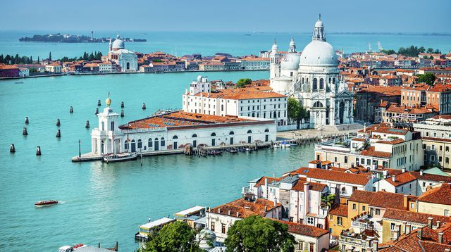
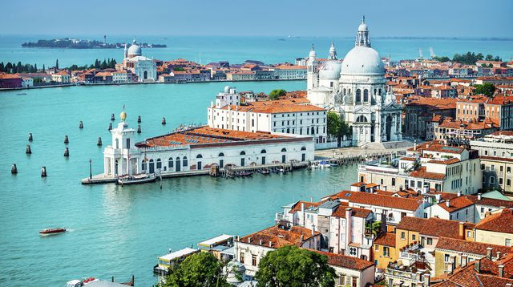
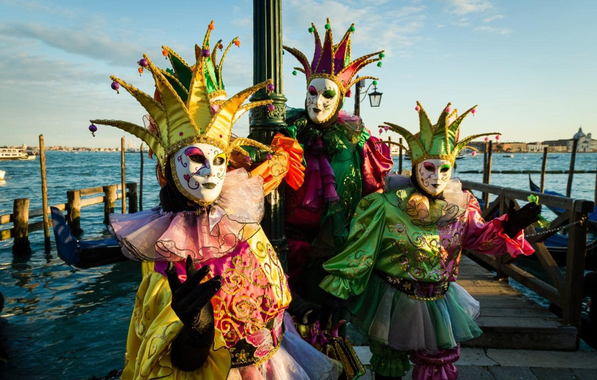
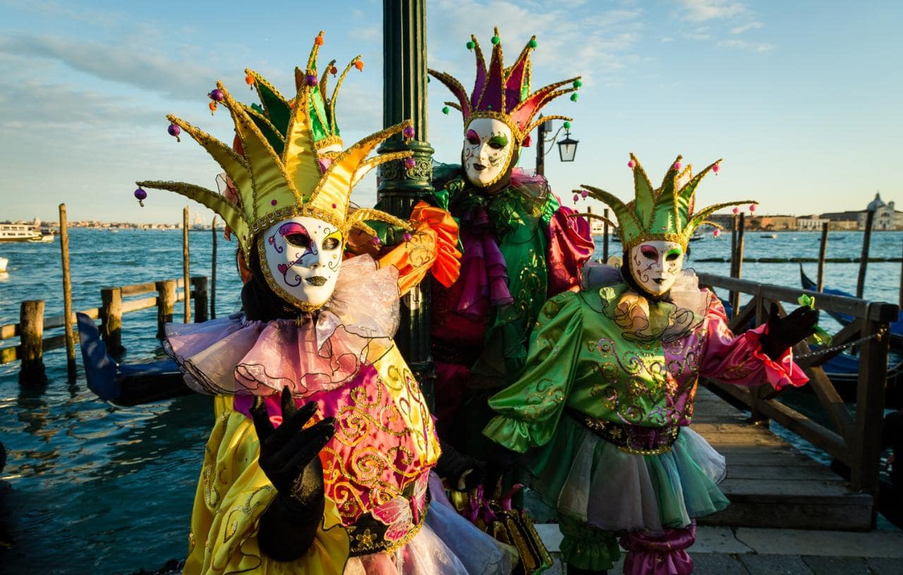

Venedig
Willkommen in Venedig
Niemand, der in der Lagunenstadt ankommt, sieht dieses Weltwunder zum ersten Mal: Zu oft wurde es beschrieben, besungen, auf Bildern und in Filmen dargestellt, sodass es längst Eingang in das kollektive Bewusstsein ganz Europas gefunden hat. Die wasserumspülten Paläste entlang der großen Kanäle sehen tatsächlich so unwirklich glänzend und zugleich so morsch aus, wie in den opulenten Bildbänden und Reisekatalogen. Die Piazza San Marco und an ihrer Stirnseite der gleichnamige Dom erscheinen auch in natura wirklich so mondän und makellos, als handle es sich um eine glamouröse Filmkulisse. Und das Panorama vom Kai vor dem Dogenpalast übers Wasser Richtung San Giorgio und Giudecca gleicht jenem, das Canaletto malte, in der Tat aufs Haar.
Doch genügt es, ein, zwei Stunden durch das Labyrinth aus Gassen, Plätzen und Hinterhöfen zu schlendern, um zu ahnen: Hier will nicht bloß eine architektonisch besonders schöne, so dicht und reich wie keine zweite mit Kunstschätzen bestückte Stadt erkundet werden. Nein, hier gilt es, das weltweit wohl wundersamste Gemeinwesen, ein einzigartiges Phänomen der Zivilisationsgeschichte, mit allen Sinnen – und hoffentlich mit Muße – zu erspüren.
Das Wunder nahm um 500 n. Chr. seinen Anfang, als die Festlandbewohner, die Veneter, vor den Hunnen und Langobarden in die Lagune flohen. Kurz nach 800 verbanden sie nach und nach Dutzende kleiner Inseln mit Brücken, rammten Millionen von Holzpfählen in den schlammigen Untergrund und schufen so jenes 7,5 km2 große Stadtgebiet, wie es sich heute noch mit seinen alles in allem rund 3000 Gässchen und 100 Plätzen, den etwa 150 Kanälen und über 400 Brücken präsentiert.
Der Blick vom Kirchturm ist es, der Neuankömmlingen auf Anhieb ein Bild von der Einmaligkeit der Lage und Anlage dieser Stadt vermittelt. Vom Campanile des Benediktinerklosters San Giorgio Maggiore zum Beispiel sind die Umrisse der Stadt gut auszumachen. Im Osten sieht man das riesige Gelände des Arsenals, der Schiffswerft. Noch ein Stück weiter östlich leuchtet das Grün der Giardini Pubblici, des Stadtparks, und das angrenzende Ausstellungsareal der Biennale. Im Westen ragen die Betonklötze der Parkgaragen und des Bahnhofs aus dem rostroten Dächermeer, und in weiter Ferne ragen die Schlote der Industriezonen von Marghera und Mestre in den dort allzu oft smogverhangenen Himmel. Zum Greifen nah hingegen ist das große, spiegelverkehrte „S“ des Canal Grande. Ein kleines Stück östlich von dessen Ende liegt das Herz und einstige Machtzentrum der Stadt: der Dogenpalast sowie die Piazza di San Marco mit der Basilika.
Sehenswertes vor Ort
-
Piazza San Marco
Napoleons Diktum vom "schönsten Salon der Welt" hat seine Gültigkeit auch gut zwei Jh.e später nicht verloren. Der 175 m lange, leicht trapezförmige Markusplatz ist fürwahr einzigartig, die Vielfalt an Stimmungen, die man auf ihm im Wechsel der Tages- und Jahreszeiten erleben kann, enorm. Er war Schauplatz unzähliger Prozessionen wie auch weltlicher Feste. Bis heute ist die Piazza Bühne der Eitelkeiten für Einheimische und Zugereiste. Und während der seltenen Stunden an nebligen Wintertagen oder in tiefer Nacht, in denen sie, von den üblichen Massen verwaist, in sich ruht, dient sie vereinzelten Traumwandlern als magische Kulisse.
-
Ponte di Rialto
Als Treffpunkt oder Fotomotiv weltberühmt - das ist die Rialtobrücke. In ihrer heutigen Form aus istrischem Stein wurde die Brücke, die die Bezirke San Marco und San Polo verbindet, im ausgehenden 16. Jh. als Ersatz für ihre hölzerne, schon recht morsche Vorgängerin errichtet. Sie bildete bis in die Mitte des 19. Jhs. den einzigen Fußgängerweg über den Canal Grande. Ihr Architekt war ein gewisser Antonio da Ponte, der sich seinerzeit mit seinem zwar recht plumpen, dafür aber sehr soliden und dem Schiffsverkehr genügend Raum lassenden Entwurf gegen prominente Konkurrenten wie Michelangelo, Palladio, Sansovino und Scamozzi durchzusetzen vermochte.
-
Basilica di San Marco
Die sinnenbetörende Pracht dieser in ihrem Kern an die 1000 Jahre alten Kirche mit fünf Kuppeln und maßwerkverzierten Bögen und Fenstern ist das Ergebnis zahlreicher Erweiterungen und Umbauten. Den Kern bildet immer noch jener im 11. Jh. über dem Grundriss eines griechischen Kreuzes errichtete Bau, in dem seinerzeit die identitätsstiftende Reliquie der Stadt, die im ägyptischen Alexandria entwendeten Gebeine des hl. Markus, aufbewahrt wurde. Den reichsten byzantinischen Gold- und Silberschatz der Welt gibt es im Tesoro, der Schatzkammer, zu sehen. Er stammt zum größten Teil aus Konstantinopel, das die Venezianer im Jahr 1204 plünderten. Obwohl ein großer Teil seiner Bestände von Napoleon geraubt und eingeschmolzen wurde, umfasst der Tesoro eine imposante Sammlung liturgischer Geräte, Reliquiare und Schnitzarbeiten.
-
Santi Giovanni e Paolo
Die Bedeutung, die das offizielle Venedig den Dominikanern als Bauherren dieses größten gotischen Gotteshauses der Stadt beimaß, zeigt sich in der Tatsache, dass nicht weniger als 27 Dogen hier ihre letzte Ruhe fanden. An deren Gräbern lässt sich eindrucksvoll die Entwicklung der örtlichen Bildhauerkunst von der Spätgotik bis in die Barockzeit ablesen. Sie findet in dem gleichsam das ganze innere Kirchenportal umfassenden Grab Alvise Mocenigos ihren kolossalen Höhepunkt. Dessen kaum minder wuchtiges Gegenüber bildet der von Baldassare Longhena konzipierte Barockaltar. Unter den zahlreichen Kunstwerken, die das Innere dieser in ihrer Gesamtheit auffallend asketischen Bettelordenskirche sonst noch bereichern, verdienen u.a. die Bilder von Giovanni Bellini, Lorenzo Lotto und Paolo Veronese Aufmerksamkeit.
-
Palazzo Ducale
Der Palast der Paläste, Machtzentrum der Politik und Gesetzgebung, höchstes Symbol venezianischer Zivilisation und Blickfang jeder Stadtvedute. 120 Dogen haben von hier aus während fast 1000 Jahren die Geschicke der Seerepublik gelenkt. In seiner heutigen, gotischen Form ist der aus drei zwischen 70 und 100 m langen Trakten bestehende Komplex zum größten Teil im 14. und frühen 15. Jh. entstanden. Schon die kolossale, mit Marmor verkleidete, im unteren Bereich von zahllosen zierlichen Säulen und Bögen durchsetzte Fassade verdient höchste Bewunderung. Man sollte die wunderschönen Skulpturengruppen "Adam und Eva" und die "Trunkenheit Noahs" an den Ecken des Südflügels beachten sowie die entzückenden Szenen an jedem einzelnen der Dutzenden Säulenkapitelle! Vollends überwältigend ist dann der Rundgang durch das Innere des Dogenpalasts. Er beginnt gegenüber der Loggetta und dem Campanile an seinem hochgotischen Hauptportal, der Porta della Carta. Durch sie betritt man den Innenhof, der von einem zweigeschossigen Triumphtor, dem Arco Foscari, und der Scala dei Giganti beherrscht wird, die zwei Statuen des Neptun und Mars von Jacopo Sansovino bewachen.
An der Ausschmückung der Räumlichkeiten waren die bedeutendsten Maler des 16. Jhs., allen voran Tintoretto, Tizian und Paolo Veronese, beteiligt. Auf ihren meist extrem großformatigen Bildern sind die wichtigsten Ereignisse der Stadtgeschichte festgehalten, von den Mythen der Gründungszeit bis zu den großen militärischen Erfolgen. Den wohl gewaltigsten Eindruck hinterlässt die Sala del Maggior Consiglio, der 54 x 25 m große Raum, in dem der aus bis zu 1800 Mitgliedern bestehende Große Rat die hohen Staatsbeamten und Männer der Signoria zu wählen pflegte. Den Blickfang stellt Tintorettos Paradiesbild an der Stirnseite dar, das mit 7 x 22 m größte Leinwandbild der Welt. Den Abschluss der Tour bildet der Gang auf der Seufzerbrücke hinüber in den Neuen Kerker. Ein besonderes Erlebnis bieten die täglich auf Italienisch, Französisch und Englisch geführten Rundgänge auf "geheimen Wegen", den Itinerari Segreti. In ihrem Verlauf gelangt man u.a. in die Zwischendecke des Großen Ratssaals, die Amtsräume des Großkanzlers, die Geheimarchive und in jene Bleikammern (piombi), in denen einst auch Giacomo Casanova schmorte.
-
Santa Maria Gloriosa dei Frari
Die "Frari", wie Santa Maria Gloriosa dei Frari meist kurz genannt wird, ist neben der Dominikanerkirche Santi Giovanni e Paolo die zweite große gotische Bettelordenskirche der Stadt. Im Kontrast zu der sich selbst auferlegten Bescheidenheit und zu den sehr schlichten Außenmauern stellten ihre Bauherren, die Franziskaner, ihren Einfluss im Innenraum nicht gerade unter den Scheffel: Beim Rundgang entpuppt sich die Frari als Kunstschrein allerersten Ranges. In dem enormen Langhaus fällt sofort die Grabpyramide des Bildhauers Antonio Canova ins Auge. Vis-à-vis befinden sich das Grab Tizians und dessen sogenannte Pesaro-Madonna. In den Chorkapellen bzw. der Sakristei hängen kostbare Altarblätter von Bartolomeo Vivarini und Giovanni Bellini, steht eine Johannes-Skulptur von Donatello und liegt der Komponist Claudio Monteverdi bestattet. Den unwiderstehlichen Blickfang bildet aber die über dem Hochaltar schwebende Assunta ("Mariä Himmelfahrt"), ein Geniestreich Tizians, der durch seine grandiose Farbgebung und die zur Entstehungszeit völlig neuartige, dramatisch himmelwärts strebende Komposition der Malkunst gegen Ende der Renaissance bereits den Weg in Richtung Barock wies.
-
Museo del Settecento Veneziano
Das Museo del Settecento Veneziano dokumentiert den opulenten Lebensstil des Adels zur Spätzeit der Republik eindrucksvoll. Über alle drei Etagen erstreckt sich dieses "Museum des 18. Jhs." Anhand kostbarer Möbel und Dekorstücke, Bilder und Deckengemälde vermittelt es einen authentischen Einblick in die Lebenswelt der reichen Adelsfamilien jener Blütezeit. Prunkstücke sind das geschnitzte Mobiliar und die Lampen tragenden Mohren, diverse Deckenfresken sowie die Kabinettbilder Pietro Longhis mit Szenen aus dem venezianischen Alltagsleben.
-
Arsenale
Vom 14. bis ins ausgehende 18. Jh. war diese Werft, in der Venedig sämtliche Schiffe seiner riesigen Kriegs- und Handelsflotte fabrizieren ließ und auch Waffen und Pulver lagerte, das Zentrum der größten Seemacht im östlichen Mittelmeer und dementsprechend streng bewacht. Heute werden auf dem 320.000 m2 großen Areal, dessen Eingang ein prächtiges, von vier Löwen flankiertes Portal markiert, Fähr- und Frachtschiffe repariert, außerdem unterhalten diverse High-Tech-Firmen Werkstätten und Büros. Nur noch einen kleinen Teil hält das italienische Militär in Beschlag.
-
Palazzo Zenobio
In dem gegen Ende des 17. Jhs. erbauten Palast unterhielten über 150 Jahre lang armenische Mönche ein Internat. Neuerdings dient der Prachtbau als Jugendherberge. Während der Biennale kann man ihren großen Schatz, einen verschwenderisch dekorierten Ballsaal, besichtigen.
-
San Pantalon
Hinter der ziemlich schlichten, um nicht zu sagen nackten Fassade wartet eine wenig bekannte Sensation: ein wahrlich gigantisches, aus 40 Leinwandelementen zusammengesetztes Deckenbild, das dem Betrachter im doppelten Sinne den Kopf verdreht.
Entdecken Sie die Schönheit Venedigs
 



 
